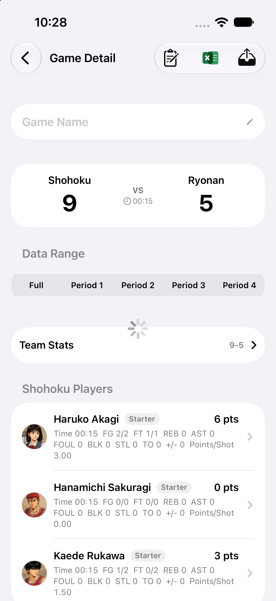
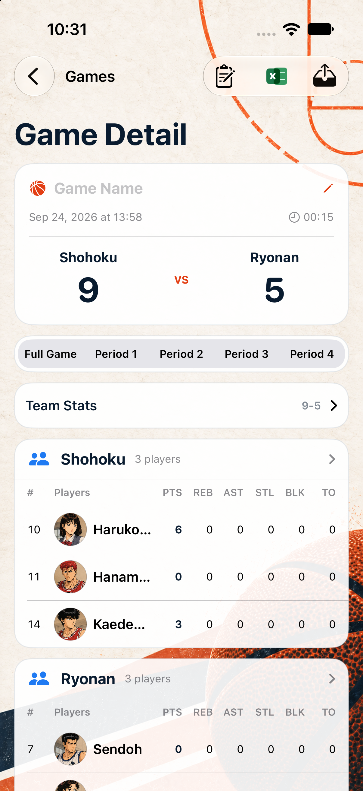
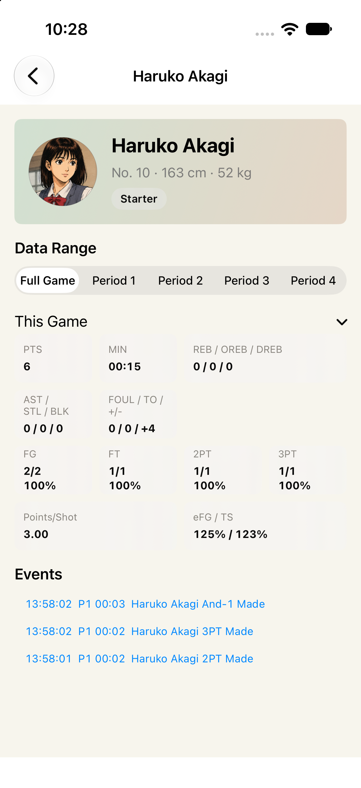
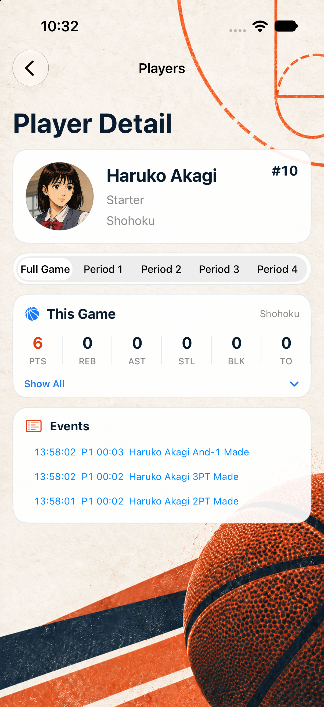

代码审查：新旧 UI 功能与数据对比
任务：新旧 UI 功能与数据对比审查
状态：发现需修复的回归
审查范围与方法
只审查当前工作树中比赛详情、球员详情及其导航入口相关改动；没有修改当前项目代码，也没有提交。旧版来自 HEAD d7f0f91 的隔离 worktree，新版来自当前工作树。两台 iPhone 17 模拟器使用同一份克隆的 App 数据。
旧版模拟器启动时因旧版 CloudKit 初始化在无 entitlement 的 Simulator 环境中崩溃；仅在隔离旧版 worktree 临时加入 Simulator 保护和 DEBUG 详情启动参数，当前项目目录不受影响。当前仓库没有 .codex/ui-audit.json，因此未声称完成官方 UI audit；本次使用 simctl 构建、启动和截图，并结合静态代码对照。
结论摘要
返回、工具栏导出、比赛名称编辑、比分、日期、时长、周期切换、球队统计、球员点击、事件日志和 AI 总结实现仍在；但“原来默认显示的数据不丢失”没有完全满足：比赛详情的球员行默认隐藏了旧版直接展示的 5 类以上统计字段，球员详情默认也把完整统计折叠到 Show All 后面。另外，比赛详情新增的事件日志卡片没有受 displayMode 限制，会出现在实时比赛页面。
逐项核对
| 项目 | 结论 | 证据 |
|---|---|---|
| 导航返回与标题 | 通过，视觉标题变化但返回入口保留 | 新版截图仍有左上返回按钮；SavedGameDetailView.swift:78-79、PlayerProfileView.swift:39-46 保留导航标题配置。 |
| 工具栏 | 通过 | 编辑事件、Cloud、分组、Excel、导出按钮仍在 SavedGameDetailView.swift:81-112；旧版对应逻辑见 HEAD 同文件 :122-155。 |
| 比赛信息与周期 | 通过 | 新版保留名称编辑、日期、时长、双方比分与周期选择：SavedGameDetailView.swift:219-292。 |
| 球队统计与球员导航 | 通过 | 仍使用 TeamStatsDisclosureView，球员行仍是 NavigationLink：SavedGameDetailView.swift:52-68、:501-534。 |
| 比赛详情球员数据 | 不通过：默认显示字段减少 | 旧版行的 stats_line_format 同时显示 Time、FG、FT、REB、AST、FOUL、BLK、STL、TO，另显示 +/- 和 Points/Shot（HEAD 同文件 :245-294）。新版表头只有 PTS、REB、AST、STL、BLK、TO（:451-460、:501-540）。数据模型和球员详情仍能提供部分字段，但比赛页默认不可见。 |
| 球员详情统计 | 不通过：完整统计默认折叠 | 旧版 fixed-game 分支直接渲染 buildGameStatRows()（HEAD PlayerProfileView.swift:137-139）；新版先只显示 6 个核心指标，只有点击 Show All 才渲染完整统计（PlayerProfileView.swift:173-233）。完整数据未删除，但默认展示与旧版不等价。 |
| 事件日志与 AI 总结 | 功能保留，但交互路径改变 | 事件日志仍可进入编辑器；AI 总结从旧版 inline 改成卡片后 sheet（SavedGameDetailView.swift:318-349、:162-175）。需额外点击，建议确认这是有意的 B 方案行为。 |
| 实时比赛页面边界 | 发现行为回归 | eventLogCard 在 SavedGameDetailView.swift:70 无条件插入；旧版只在 displayMode == .history 下面显示 AI，且实时调用点为 GameView.swift:656。实时页面现在会出现“编辑事件日志”卡片，和旧版边界不一致。 |
| 职业页选择比赛、分组、职业/平均统计、ELO | 功能入口保留 | 新版普通球员分支仍有 Choose Games、分组筛选、Career Stats、Average Stats（PlayerProfileView.swift:106-151）；ELO 历史仍由 header 中 ELO 值触发。 |
必须修复的发现
- P1 数据可见性回退：比赛详情默认球员表应恢复至少 Time、FG、FT、FOUL、+/-、Points/Shot，或提供清晰的“完整统计”入口并保证与旧版等价。
- P1 数据可见性回退：球员详情的完整 This Game 统计不应默认藏在 Show All 后面，除非产品明确接受该展示变化；至少应在审查标准中把“数据保留”和“默认可见”区分开。
- P2 行为边界：将
eventLogCard限定在displayMode == .history，避免实时比赛页出现历史编辑入口。
证据截图




验证状态
- 旧版隔离 worktree Debug 构建：通过。
- 当前工作树 Debug 构建：通过。
- 当前工作树 Release 构建：此前已通过。
git diff --check：通过。- 当前项目生产代码：本轮未修改、未提交。
建议下一步
先修复上面的 P1/P2，再重新跑同一份数据的两台模拟器截图，重点检查：比赛页所有旧字段、球员页完整统计、实时比赛页不出现历史编辑卡片。修复前不建议把这轮 UI 审查标记为通过。